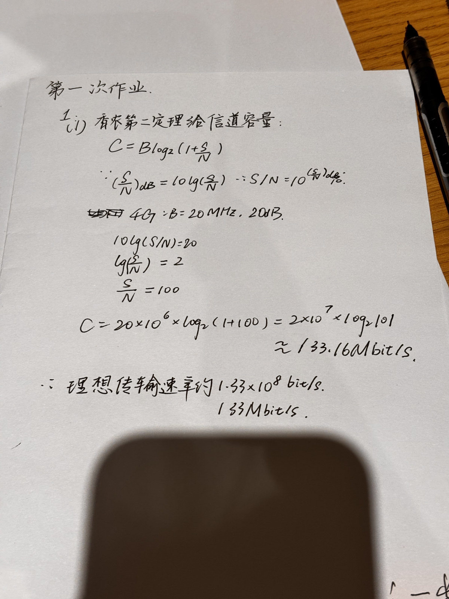
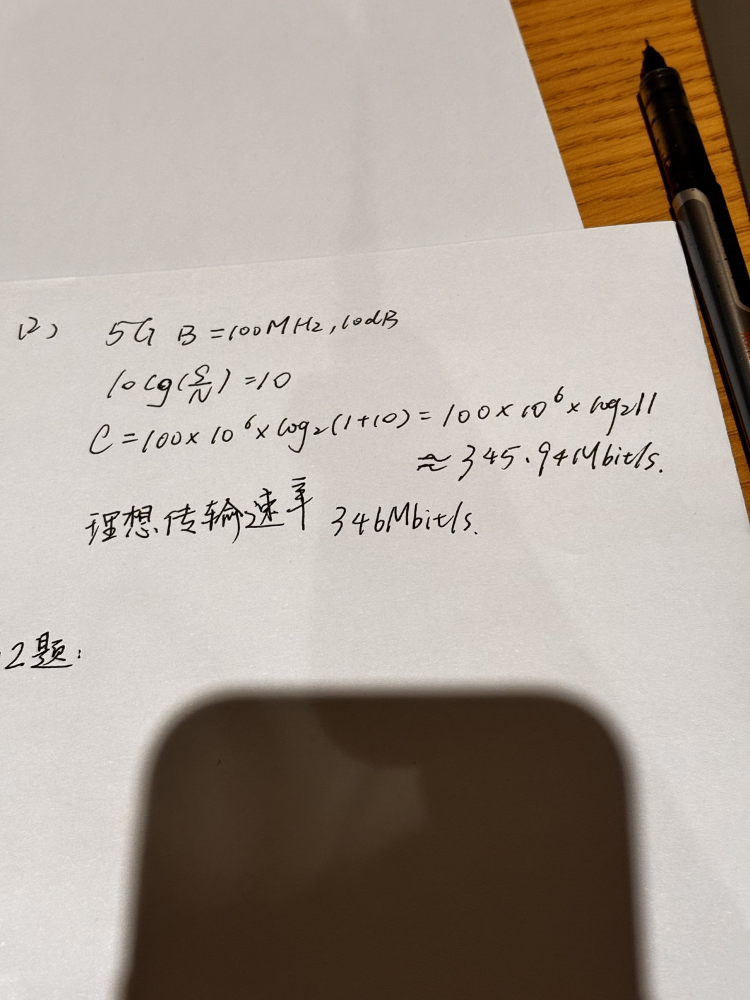
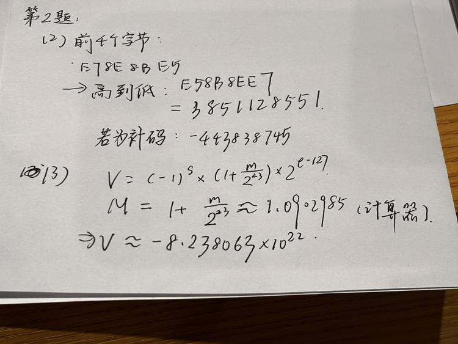
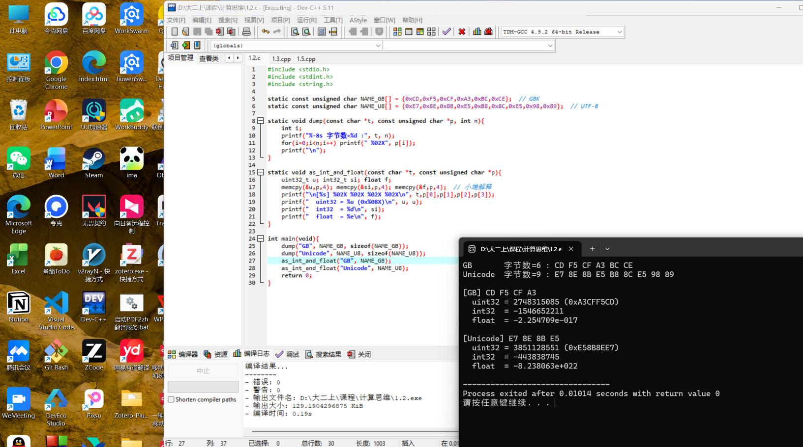
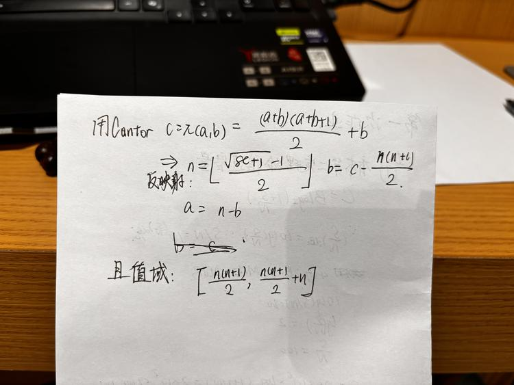
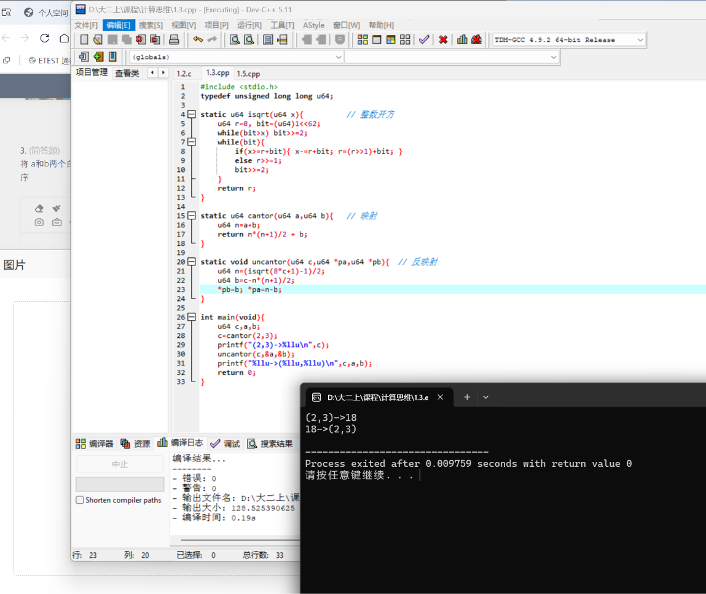
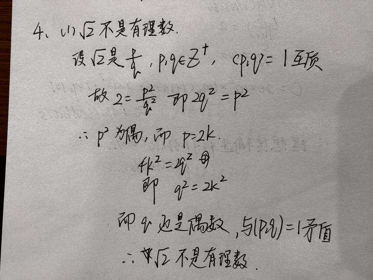
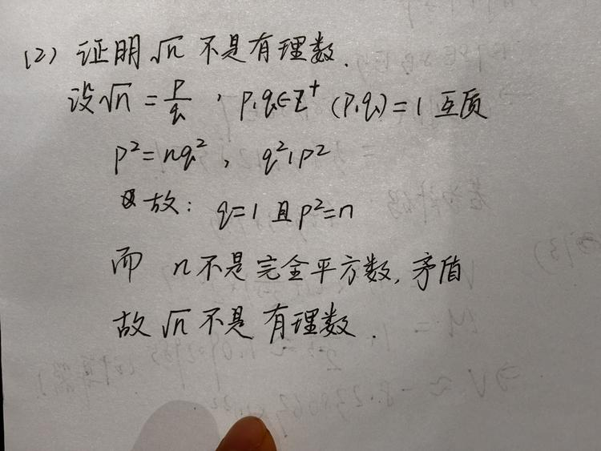
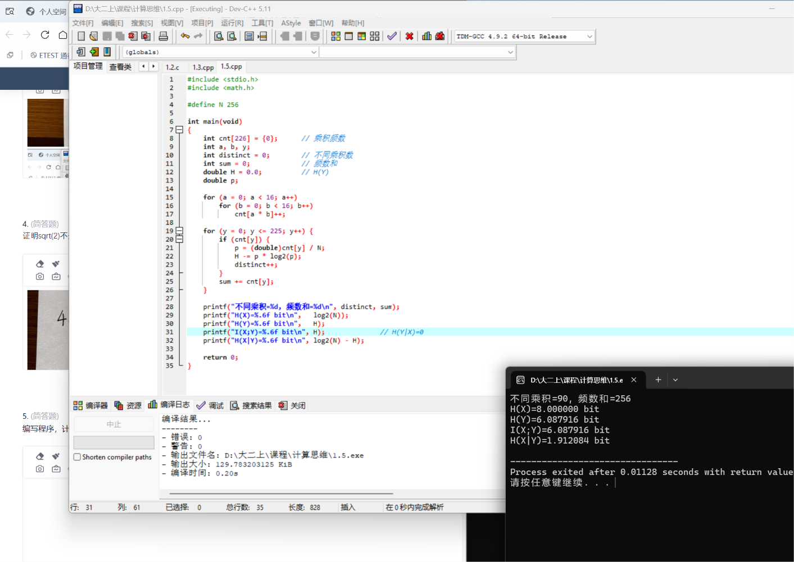
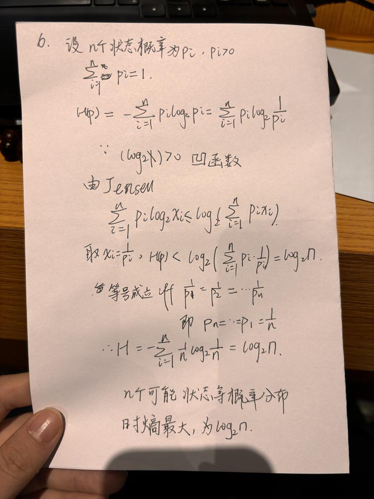

计算题第 1 题
在 4G 移动通信情况下，假设使用带宽 20M，良好情况下，信噪比为 20dB，计算理想的传输速率。对于 5G 移动通信，使用厘米波载波情况下，信道带宽最大 100M 赫兹，假设信噪比为 10dB，计算理想传输速率。


简答题第 2 题
查询自己名字的汉字编码，GB 编码和 Unicode 编码分别是多少？对于这些编码的前 4 个字节，将其看待为 32 位整数的话，值是多少；将其看待为 float，值是多少？编写一个通用的 C 语言程序，实现上述功能。
王希嘉
GBK机内码：CD F5 CF A3 BC CE，6 字节
UTF-8：E7 8E 8B E5 B8 8C E5 98 89，9字节


简答题第 3 题
将 a 和 b 两个自然数（不限定大小），合成一个不重复的新的自然数 c，使得 (a,b) 和 c 构成一一映射。写出映射和反映射的公式，以及程序。


简答题第 4 题
证明 √2 不是有理数；更进一步，证明当 n 不是完全平方数时，√n 不是有理数。


简答题第 5 题
编写程序，计算两个 4bit 数的乘积构成的集合的熵值，计算输入集合和输出集合之间的互信息熵。

简答题第 6 题
证明信息熵的公式中，对于 n 个可能状态，当所有状态等概率分布时熵值取最大值。
